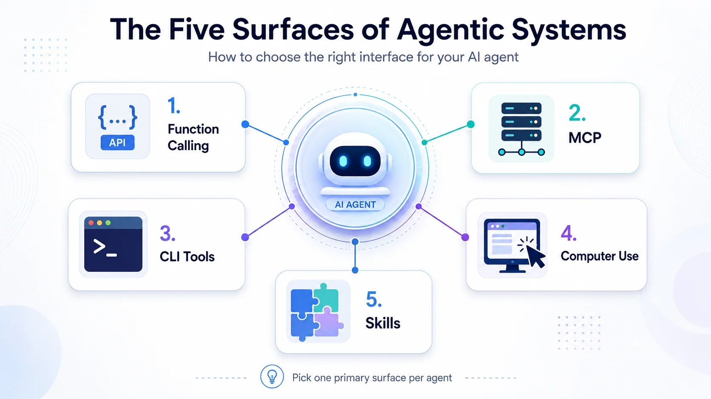

Skills vs MCP vs CLI: AI Agent Tools Compared
Skills describe how to do a task. MCP connects an agent to tools and data. A CLI executes commands. Computer Use operates a user interface. They solve different problems, and an agent can combine them.
If you are comparing Skills vs MCP vs CLI, that distinction is the useful starting point. You do not have to choose one technology for the whole application. Choose the simplest reliable interface for each capability, then enforce permissions outside the model.
In this guide I map the main AI agent tools, explain where function calling fits, and use an Intune support workflow to make the choices concrete. Updated 28 September 2026: the vendor mapping now includes Codex Skills and Googleâs Agent Development Kit. The original illustration is retained at the end as a historical overview.
| Building block | What it does | What it does not provide by itself |
|---|---|---|
| Function calling | Lets a model request a typed operation | Permission to execute that operation |
| MCP | Standardizes communication between a host and a tool server | A guarantee that every host supports every feature |
| CLI | Runs an installed command-line program | A safe identity or a restricted execution environment |
| Computer Use | Works through the visible application interface | A stable API contract |
| Hosted tools | Runs a provider-managed capability such as search | Identical behavior, billing or retention across providers |
| Sub-agents | Delegates part of the work | Free parallelism or automatic quality improvement |
| Skills | Packages instructions and supporting resources | Access to a system that the agent does not already have |
Your application describes an operation and its arguments. The model requests it; your code validates the request, checks access and executes it. A schema can constrain the shape of the arguments. It cannot decide whether this user is allowed to restart that device.
I would start here for a small application with a few internal operations. For example, get_device_compliance(device_id) can expose one useful, read-only result instead of handing the agent a broad administrative API.
2. MCP â Model Context Protocol
MCP is useful when a capability needs to work across several compatible agent hosts. It separates the client from the server that offers tools, resources or prompts. That reuse can justify a separately operated service; three private helper functions do not automatically need one.
For remote HTTP servers, authentication is something you configure and validate, not something the letters MCP grant you. The specification defines an OAuth-based authorization framework but does not make authorization mandatory for every implementation. Check the clientâs supported flow, the token audience, scopes and the serverâs own access checks. MCP authorization specification.
My design question is: who owns this operation, and which callers may use it? A successfully connected server is not evidence that tenant isolation or write permissions are correct.
A terminal-based agent may already have useful programs such as az, gh or PowerShell. A command with predictable exit codes and structured output can be a practical integration. This is the idea behind my earlier CLI tools and MCP comparison.
But a good prompt is not enough. I would verify the signed-in account, tenant, subscription, working directory and command version. Prefer read-only access for investigation. Do not assume that a CLI inherits the permission boundary you intended for the agent.
A narrower service or wrapper can still make sense when you need consistent outputs, centralized policy or a small tool surface. Reuse is useful; unrestricted shell access is a separate decision.
4. Computer Use
Computer Use acts through an applicationâs interface, using screenshots or other supported UI information. It helps with workflows that are only exposed in the UI, or when the goal is specifically to demonstrate the portal experience.
The trade-off is dependence on layout, loading states and dialogs. I would test the actual workflow rather than declare every UI task too slow or unreliable. For consequential actions, add a review step and verify the saved result. Do not treat a button click as proof that a change took effect.
Page text and screenshots are input, not instructions that may override the userâs task. Logs also need care: a useful screenshot trace can contain customer data.
Provider-managed tools can save you from operating a search service or execution sandbox yourself. Check each capability separately: supported file types, citations, limits, retention and additional charges can differ.
Uploading a file is not the same as providing retrieval over it. A Files API can manage file objects without being an indexed search product. Googleâs Gemini documentation, for example, documents File Search as its own managed retrieval capability. Gemini File Search.
I would evaluate a hosted option against the workloadâs requirements first. Building your own is justified when you need control the hosted product cannot provide, not simply because the project is important.
Delegation can help when a task has independent parts or needs a separate context and a narrower set of tools. A handoff that transfers control is not necessarily the same as calling an agent and waiting for its result.
My starting point would still be one agent with a clear task. Split when you can explain the benefit: a separate reviewer, a bounded research task or parallel work with independent outputs. Measure the extra latency, usage and coordination failures. More agents is not a quality metric.
7. Skills â the term that means four different things
For file-based Agent Skills, think of a package containing SKILL.md and optional scripts, references or assets. The description helps a compatible agent identify relevant guidance; the package describes a repeatable way of working. It is not a network endpoint. Agent Skills specification.
Codex also supports this pattern. Its skills can combine written instructions with scripts and references, and can work alongside MCP tools. It is incorrect to treat skills as exclusive to Claude. Codex customization and skills.
Keep other product concepts separate. A Microsoft 365 declarative agent, a custom engine agent, a Semantic Kernel plugin and a reusable skill package are not interchangeable types. Ask what is actually being packaged: instructions, executable operations, an agent or an entire user experience.
This is a map of examples, not a feature-parity promise. Product plans, model support and available tool types still need checking.
| Ecosystem | Examples to distinguish | Important correction |
|---|---|---|
| Anthropic | Claude Code skills, tool use, Claude Agent SDK | A skill is not the same thing as an API tool |
| OpenAI | Codex skills, function calling, Agents SDK | Codex does have skills; Custom GPTs are a different product concept |
| Microsoft | Foundry agents, Copilot Studio agents, Microsoft 365 agent types | Do not call every agent or plugin a skill |
| Gemini tools and Agent Development Kit | Google does have a first-party agent SDK |
Googleâs official ADK repository describes its code-first agent toolkit. The practical comparison is the behavior your application needs, not whether two vendors use the same noun.
The decision tree I actually use
Imagine an Intune support agent answering: âWhy is this device still noncompliant?â
- Retrieve a bounded device summary. Use a typed operation with read-only access. Use MCP if several agent clients should reuse the same service.
- Apply the investigation procedure. A skill can define the order of checks, evidence to collect and when to stop. It does not grant extra Microsoft Graph permissions.
- Use existing operational tools where appropriate. A controlled PowerShell or CLI command may be enough in a developer workflow. Return the evidence needed for the answer, not every tenant object.
- Use the portal when the UI is the point. For a live walkthrough, show the relevant device view. For unattended operations, prefer a stable supported interface where available.
- Keep remediation separate. A suggested fix is not authorization to execute it. Scope write operations and require approval where the impact warrants it.
That is not four competing architectures. It is one workflow with separate instruction, integration and execution layers.
- A skill presented as a security boundary. Instructions can guide behavior; identities and service-side checks enforce access.
- A protocol presented as universal compatibility. Test the actual host, transport, authentication flow and tool behavior.
- A file upload presented as search. Check indexing, retrieval, citations and lifecycle explicitly.
- Too many tools without a reason. Expose the smallest useful set and evaluate selection failures before adding more.
- An action presented as an outcome. Re-read the resulting state, record failures and make the evidence reviewable.
For an implementation in a repository, my Claude Code GitHub Actions guide covers triggers, authentication and a constrained starting workflow. For the platform decision, see Copilot, Copilot Studio and custom agents.
My useful rule is simple: package the procedure as instructions, expose the smallest useful operations, and choose the execution interface that fits the environment. Combine these building blocks when there is a reason, and test what happens when a tool fails or the caller lacks permission.
The original May 2026 overview below is retained for continuity. Its vendor labels are historical; use the updated distinctions above rather than reading it as a current product support matrix.

Stay healthy, Cheers Jannik